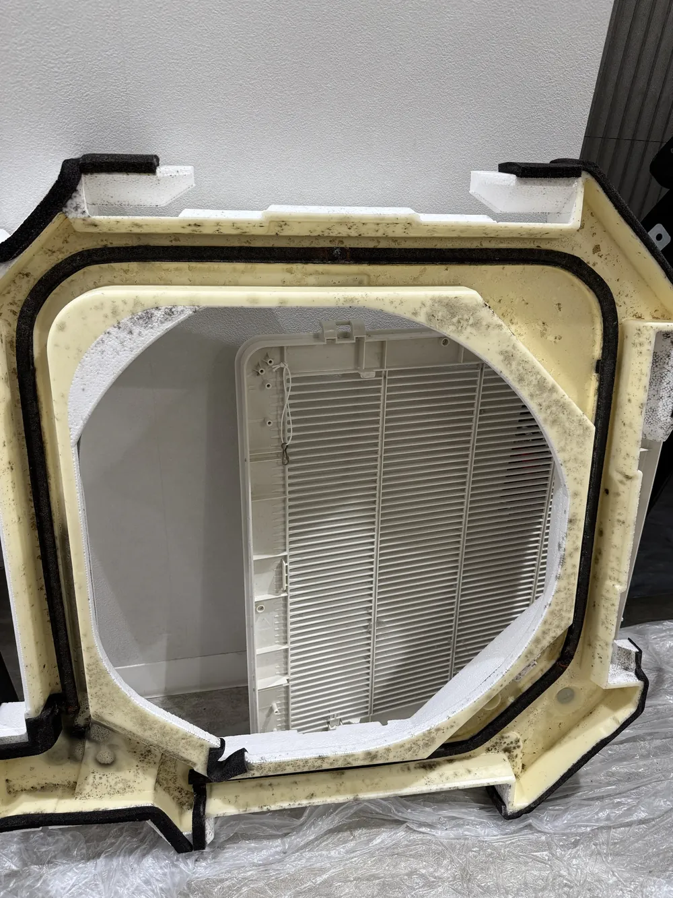
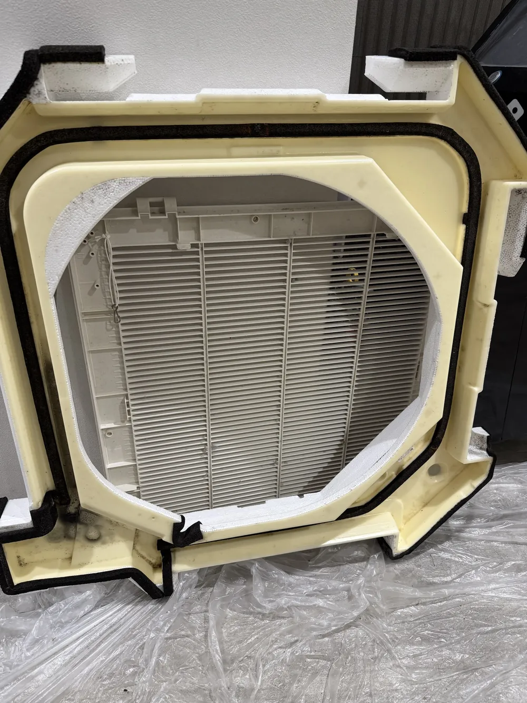
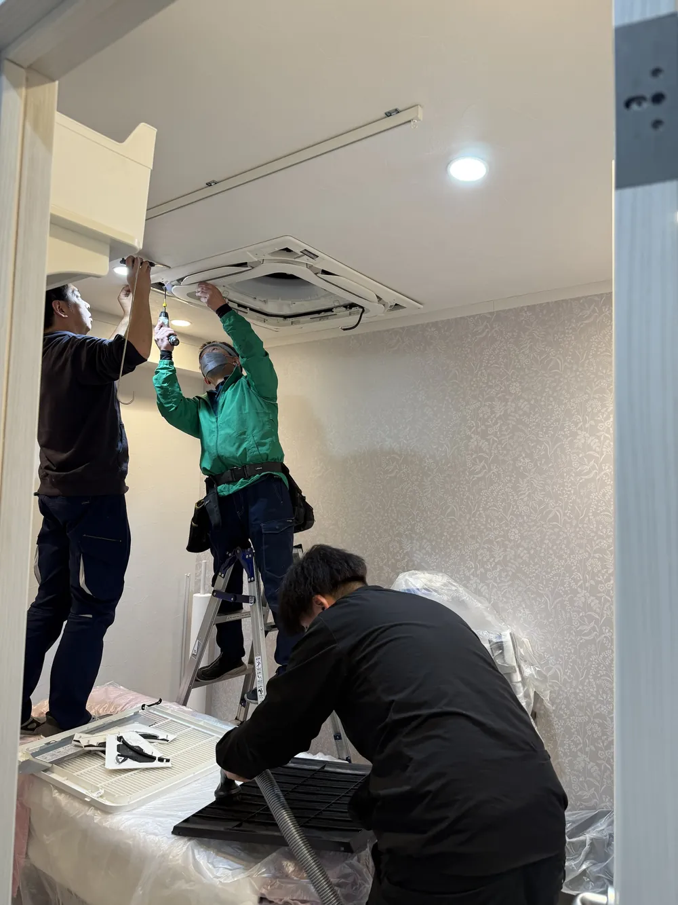

美容クリニックの
清掃・定期清掃
内装のデザインそのものがクリニックの印象になる美容クリニック。床材や仕上がりの質感にこだわりながら、夜間・休診日に床・カーペット・エアコンをまとめて清掃します。
美容クリニックの清掃で大切なこと。
美容クリニックの院内は、大理石調のタイルやデザイン性の高いカーペット、木目調の床など、ブランドイメージに合わせた内装で仕上げられていることが多く、清掃でもその質感を損なわないことが求められます。床材によって適した洗浄方法は異なり、タイルの種類によってはワックスを塗らないほうがよい場合もあります。
留福美装は、関東で多院展開する美容クリニック様の全院を担当し、床洗浄・カーペット洗浄・業務用エアコン洗浄を診療時間外の夜間にまとめて行っています。院ごとに清掃業者が異なると、日程調整や品質の管理に手間がかかります。複数院の清掃窓口を一本化したい本部・事務局のご担当者様もお気軽にご相談ください。
美容クリニックの清掃で配慮していること。
多院展開クリニックの実績
関東で多院展開する美容クリニック様の全院を担当しています。
床材に合わせた方法
大理石調タイル・カーペット・木目調の床など、素材を確認して方法を決めます。
夜間・休診日の作業
診療時間の長いクリニックでも、診療終了後の夜間に対応します。
複数院の窓口を一本化
院ごとに異なる清掃業者をまとめ、日程と品質の管理をシンプルにします。
清掃の頻度の目安。
美容クリニックでは、来院される方の印象を保つために、床洗浄・カーペット洗浄を毎月〜2か月に1回程度、エアコン洗浄を年1回程度といった組み合わせを一つの目安としてご提案しています。院数・各院の面積をうかがい、全院共通の計画をご提案します。
頻度の考え方はクリニックの床清掃はどのくらいの頻度が必要？、費用については料金ページもあわせてご覧ください。
関連する施工事例。







美容クリニックの清掃 対応エリア。
埼玉県(川口・蕨・戸田・浦和・大宮・越谷・草加など)と東京都(足立区・北区・板橋区・豊島区・新宿区・渋谷区など)の美容クリニックに伺います。地域ごとの建物の傾向や作業の段取りは、各エリアのページをご覧ください。
美容クリニックの清掃 よくあるご質問。
複数院をまとめて依頼できますか？ +
可能です。関東で多院展開する美容クリニック様の全院を担当しており、院ごとに日程を分けることも、まとめて計画することもできます。
大理石調のタイルにもワックスを塗るのですか？ +
タイルの種類によっては、ワックスを塗らずに洗浄だけで仕上げるほうが適している場合があります。床材を確認したうえで方法をご提案します。
夜遅くまで診療していますが、作業できますか？ +
診療終了後の夜間に作業を行っています。作業開始時刻と終了時刻の目安を事前にすり合わせます。